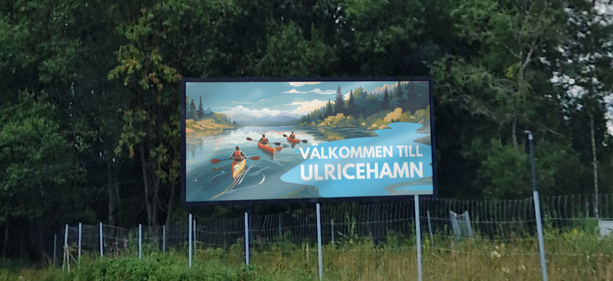

Näringsliv Ulricehamn
The following projects are from my employment as tourist informant at company Näringsliv Ulricehamn during the summers of 2023 and 2024.
Infartsskyltar
These are designs I have made for the digital information signs at the speedway placed at thye entrances of the municipality of Ulricehamn.




Boule Programme Print
This one is a small booklet that was printed in 800 copies for the Swedish National Series in boule in Ulricehamn 2023, which I got the oppurtunity to design. All pictures of the sport in the programme was also taken by me.
Download PDF
BRANDPERIOR
Projects from my nine week long internship at the company Brandperior in 2023